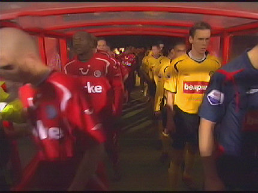
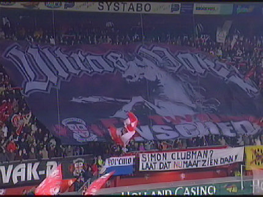
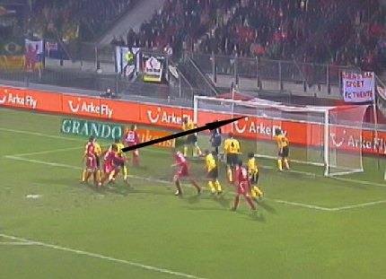
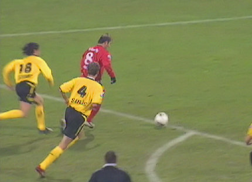
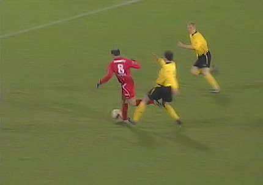
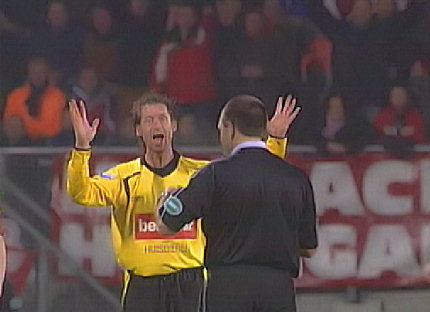
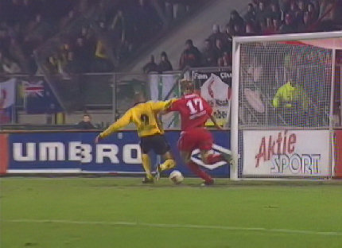
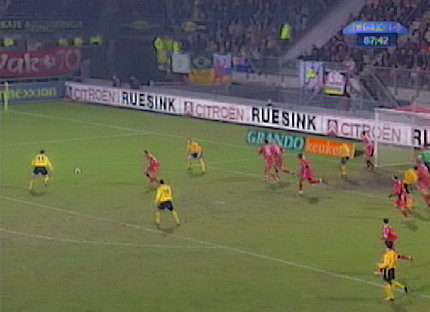

|
FC
Twente - Roda JC (1-0) 11 februari 2006
|

De spelers betreden het praktisch uitverkochte stadion.

Het trauma over de verloren zoon zit kennelijk diep bij de Tukkers.

Uit een hoekschop van
Bakircioglü kopt Zomer 1-0 binnen, (6').
Lachambre
slaagt er niet in de bal van de doellijn te koppen.

Cziommer verhindert dat
Bakircioglü even later 2-0 scoort.

In de tweede helft tikt Senden de doorgebroken
Bakircioglü aan.

Omdat Lachambre ook nog in de buurt liep is er geen sprake van een
"direct ontnomen scoringskans" waardoor scheidsrechter Bossen kan
volstaan met geel.

Bodor bereikt Cristiano, maar een sliding van Niemeyer voorkomt een
geheide treffer voor Roda.

In de slotfase stuitert een bal van Oper uit een hoekschop van Bodor net
naast het doel. Het blijft 1-0 waardoor kostbare punten verspeeld worden.
Roda zal niet degraderen of nacompetitie hoeven vrezen maar het bereiken
van de plee-offs wordt nu vrijwel onmogelijk nu de naaste concurrenten
Twente en RKC beide 3 punten pakten.
Het lijkt erop dat Roda's kans op Europees voetbal via de beker loopt.
© Koempels Pleasure Dome
|